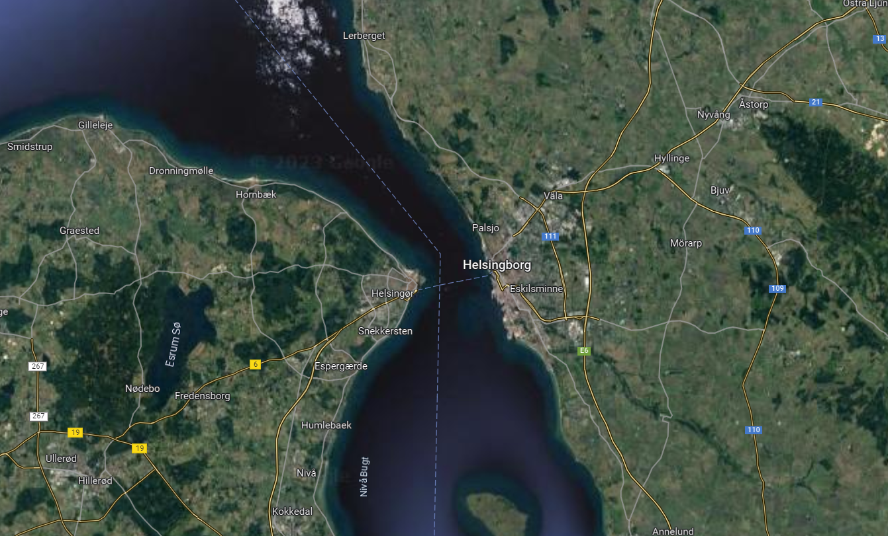
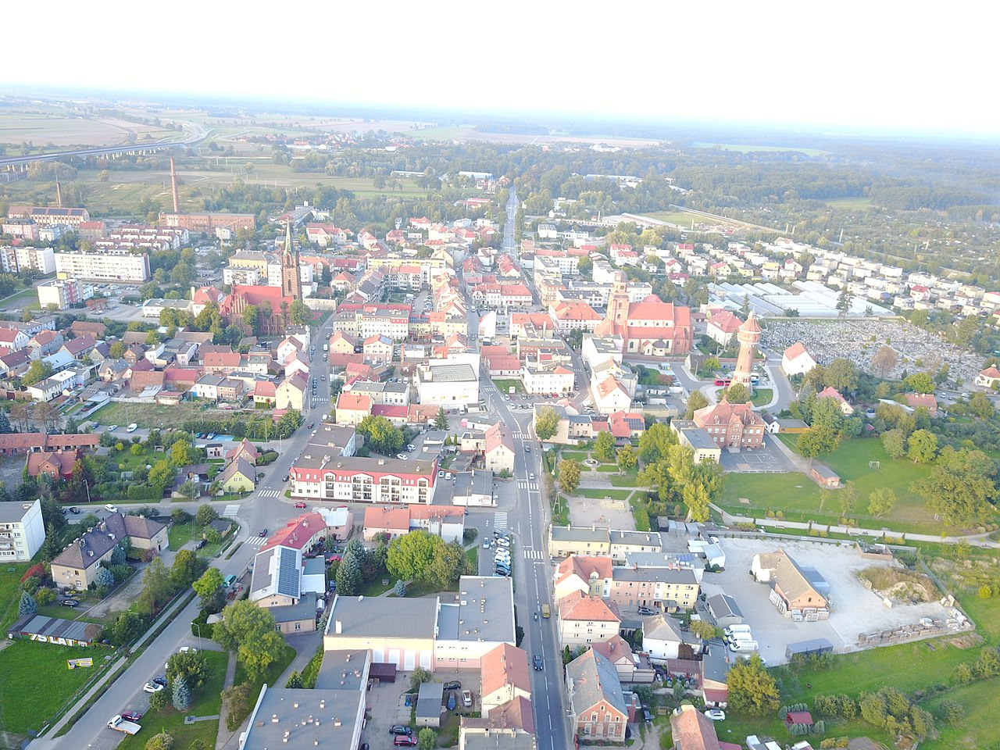
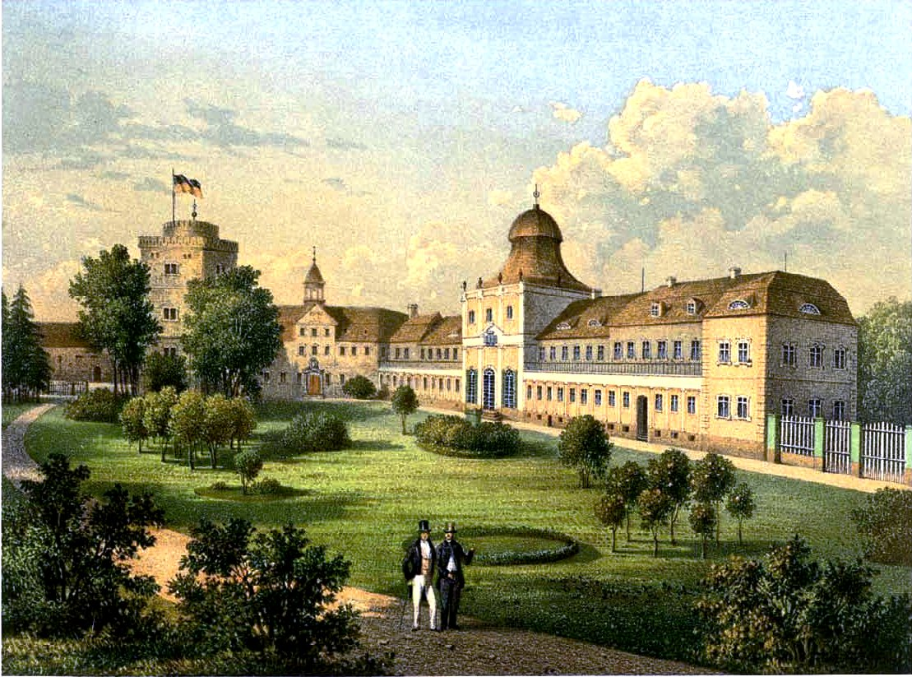
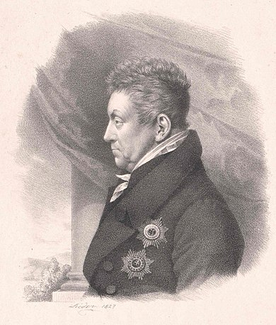

휴전 (14) - 베르나도트의 운수 좋은 날
게시: 2023-10-02T06:30:51+09:00
원래 러시아와 프로이센은 나폴레옹과의 싸움에 있어서 스웨덴의 도움이 절실하지는 않았습니다. 이유는 간단했습니다. 스웨덴은 작고 보잘 것 없는 나라였기 때문이었습니다. 당시 전장에서 승리는 결국 누가 더 많은 총검과 대포를 동원할 수 있느냐에 달려있었는데, 그를 위해서는 무엇보다 인구가 많아야 했습니다. 그런데 인구가 각각 3천만에 육박했던 프랑스와 러시아에 비하면 인구가 240만 정도에 불과했던 스웨덴은 초라한 수준의 병력만을 동원할 수 있었습니다. 예나-아우어슈테트 전투 이후 영토를 절반 이상 빼앗긴 프로이센은 인구가 975만에서 450만으로 줄어드는 봉변을 당했지만, 그래도 스웨덴의 2배에 달하는 인구를 가지고 있었습니다. 게다가 당장 자신의 영토와 바로 인접한 작센에서 전투가 벌어지다 보니 일종의 예비군이라고 할 수 있는 국민방위군(landwehr)까지 동원하여 8만 정도의 병력을 전개시킬 수 있었습니다. 그런데 지리적으로 발트 해 너머에 위치한데다 바로 옆에 적성국가라고 할 수 있는 덴마크령 노르웨이를 끼고 있던 스웨덴은 전체 병력을 모조리 다 독일 땅에 전개시킬 수도 없었습니다. 따라서 스웨덴이 나폴레옹과의 싸움에 투입할 수 있는 원정군은 아무리 좋게 봐줘도 3만을 넘기기 어려웠습니다. 이 정도의 병력은 대륙의 강대국들끼리 맞붙는 전장에서는 1개 군단 정도에 불과했습니다.

(건너편 덴마크 젤란트 섬의 크론보르그 성이 더 유명하긴 합니다만, 스웨덴측의 헬싱보리만 쥐고 있으면 사실상 발트 해와 북해 사이를 완전히 장악할 수 있습니다. 크론보르그와 헬싱보리 사이는 약 3km 정도에 불과합니다.)
그러나 이런 스웨덴의 병력 규모조차도 영국의 눈에는 꽤 중요하게 보였습니다. 어차피 영국이 스페인에 투입된 웰링턴의 병력도 이 정도였기 때문이기도 했지만, 발트 해를 통한 상품과 병력의 수송이 중요했던 영국에게는 헬싱보리(Helsingborg)의 해협을 쥐고 있던 스웨덴을 연합군측으로 끌어들이는 것이 매우 중요했기 때문이었습니다. 그래서 1812년부터 영국은 스웨덴, 더 정확히는 그 왕세자이자 사실상의 섭정이던 베르나도트에게 온갖 공을 들이며 협상을 계속했고, 1813년에는 3만의 원정군을 독일에 파병해준다면 100만 파운드의 보조금을 지급하겠다고 약속했습니다. 병사들 수천 수만이 죽어나가는 와중에 돈의 액수가 뭐 중요하냐 싶겠습니다만 영국에게는 매우 중요한 문제였습니다. 영국이 내놓는 보조금의 액수는 영국이 그 동맹국에 부여하는 전략적 가치와 비례했습니다. 8만의 병력을 동원한 프로이센에게 영국이 지급한 보조금이 67만 파운드였다는 점을 상기해보면, 영국이 스웨덴에 들이는 정성이 얼마나 대단한지 알 수 있습니다. 이렇게 영국 외에는 별로 주목하지 않던 스웨덴이 갑자기 중요해진 것은 앞서 언급했던 것처럼, 연합군의 하계 작전 계획이 각국의 정치적 이해 관계로 인해 상당히 왜곡되었기 때문이었습니다. 먼저, 반(反)나폴레옹 전선에 뛰어들 경우 가장 먼저 나폴레옹의 공격을 받을 것이 뻔했던 오스트리아는 보헤미아에 연합군의 증원군이 와주길 바랬고, 더 나아가 자국 방어를 위해 연합군 전체를 통제하길 원했습니다. 이건 러시아와 프로이센도 인정할 수 밖에 없는 요구였습니다. 가장 먼저 오스트리아가 박살이 난다면 오스트리아는 나폴레옹과 단독으로라도 평화 협정을 체결할 가능성이 높았는데, 그런 일이 발생한다면 어려게 만들어진 러-오-프 연합은 대번에 끝장이 나는 것이었으니까요. 따라서 보헤미아에 배치될 오스트리아-러시아-프로이센 연합군의 총사령관은 오스트리아 장군이 맡게 될 예정이었습니다. 그렇게 오스트리아가 자신의 이익을 챙기는 것을 보고 프로이센도 자신의 수도인 베를린을 지키고 싶었는데, 명분이 부족했습니다. 그래서 끌어들인 것이 스웨덴군이었습니다. 스웨덴이 참전하여 북쪽에 북방군이라는 이름의 제3군이 형성된다면, 자연스럽게 베를린의 안전이 보장되기 때문이었습니다. 러시아로서는 약간 불만스러운 일이었지만, 짜르 알렉산드르는 내심 프로이센 국왕 프리드리히 빌헬름을 딱하게 여기고 있었기 때문에 그의 부탁을 들어줄 수 밖에 없었습니다. 하지만 문제는 정작 스웨덴, 더 정확하게는 베르나도트를 끌어들이는 것이었습니다. 프랑스군 원수 출신으로서 스웨덴 왕세자가 되어 하루 빨리 스웨덴의 귀족들과 국민들의 신뢰와 존경심을 얻어내는 것이 급선무였던 베르나도트는 그 나름대로 자신의 이익을 위해 뛰고 있었는데, 그 핵심은 노르웨이를 스웨덴 영토로 빼앗는 것이었습니다. 애초에 외국인이던 그가 스웨덴의 왕세자가 될 수 있었던 것은 그가 나폴레옹과 껄끄러운 사이라는 것을 몰랐던 스웨덴 사람들이 그를 데려오면 나폴레옹의 도움을 받을 수 있을 것이고, 그러면 러시아에게 빼앗긴 핀란드를 되찾을 수 있을 것이라고 오해했기 때문이었습니다. 베르나도트는 그런 스웨덴 사람들에게 핀란드는 잊고 대신 노르웨이를 차지해야 한다고 역설하고 있었는데, 베르나도트로서도 자신이 무사히 스웨덴 왕좌에 오르기 위해서는 반드시 노르웨이를 빼앗아야 하는 입장이었습니다. 이런 베르나도트에게 메테르니히가 내놓았다는 나폴레옹과의 평화 협정 조건은 매우 실망스러운 것이었습니다. 덴마크로부터 노르웨이를 빼앗아 스웨덴에게 준다는 요구조건이 빠져있었기 때문이었습니다. 이런 점에서 스웨덴은 영국과 마찬가지로 프라하에서 벌어진다는 평화 협상에 불참하며 노골적인 불만을 표시했습니다. 오스트리아의 비위를 맞춰주기 위해 겉으로는 프라하 협상에 참여하고 있던 러시아와 프로이센에게 있어서는 스웨덴의 그런 강경한 입장은 오히려 다행스러운 것이었습니다. 알렉산드르와 프리드리히 빌헬름은 베르나도트와 향후 작전에 대해 논의하자며 슐레지엔의 트라헨베르크(Trachenberg)로 그를 초대했습니다. 러시아의 짜르와 프로이센 국왕은 7월 9일 정오 무렵 트라헨베르크에 도착했고, 베르나도트는 그 날 자정을 넘긴 늦은 시간에 도착했습니다. 이 군주들간의 회담은 프로이센의 대공 하츠펠트(Franz Ludwig von Hatzfeldt)가 소유한 하츠펠트 궁전(Schloss Hatzfeld)에서 열렸습니다.

(트라헨베르크는 지금 폴란드의 즈미그루트(Żmigród)입니다. 지금도 인구 6~7천명의 작은 도시인데, 폴란드어로 즈미그루트란 용(Żmij)의 성(gród)이라는 뜻이라고 합니다. 원래 폴란드 땅이었으나 이후 신성로마제국과 스웨덴 등의 지배를 받았고, 나폴레옹 전쟁 즈음에는 프로이센의 땅이 되었습니다.)

(알렉산드르와 프리드리히 빌헬름이 베르나도트를 만나 회담한 바로크 양식의 하츠펠트 궁전입니다. 이 그림은 1860년 경의 모습입니다.)

(당시 이 궁전의 소유주이던 하츠펠트입니다. 알고 보면 이 하츠펠트라는 양반의 이름은 이미 여러분이 알고 계십니다. 1806년 나폴레옹이 예나-아우어슈테트 전투에서 프로이센군을 격파하고 베를린에 입성했을 때 베를린 시장이 바로 하츠펠트였습니다. 당시 50세이던 하츠펠트 대공은 쾨니히스베르크로 도주한 프리드리히 빌헬름에게 너무나 태평하게 '지금 베를린 상황은 어떠어떠한데 프랑스 군은 제 몇 군단이 들어와 있고 어쩌고' 하는 편지를 써서 일반 우편 행낭에 넣어 보냈습니다. 이 편지는 당연히 나폴레옹의 검열에 걸려 들었고, 나폴레옹은 '프랑스 군에 대한 작전 정보를 적에게 몰래 보내려 했다'라며 간첩 혐의를 적용하여 그를 군법회의에 넘겼습니다. 어떻게 보면 별로 해될 것도 없는 내용이고, 자신과 베를린의 처지를 잘 이해 못했던 눈치없는 왕족의 실수라고 볼 수 있는 사건이었습니다만, 그 결과는 사형 선고였습니다. 나폴레옹이 원했던 것은 '내가 너희들과 노닥거리려고 베를린까지 온 것이 아니다'라는 공포의 메시지를 베를린에 뿌리려는 것이었나 봅니다. 다행인지 불행인지, 하츠펠트 대공의 젊고 아름다운 부인이 직접 나폴레옹을 찾아가 눈물로 호소한 끝에, 미녀에게 약한 나폴레옹이 그 유일한 증거물인 편지를 즉석에서 벽난로 불에 던져 넣고 소동을 끝냈습니다.) 베르나도트가 이 회담에 참석할 때, 그는 오스트리아는 끝까지 중립을 지키다가 양측이 모두 기진맥진할 때서야 무장 중재를 한답시고 뛰어들어 얌체처럼 자기 몫을 챙기며 유럽의 평화를 오스트리아가 이루어냈다고 생색을 낼 것이라고 믿었습니다. 그러나 두 연합국 군주들이 베르나도트에게 그건 오해라고 열심히 설명을 했고, 특히 오스트리아의 스타디온 백작도 직접 찾아와 오스트리아의 진정성을 열심히 호소한 끝에, 베르나도트는 오스트리아가가 곧 나폴레옹에게 선전포고할 것이라는 것을 믿게 되었습니다. 베르나도트는 그 와중에도 열심히 자신의 이익을 챙겼습니다. 스타디온 백작에게 그는 '난 과거 아돌프 구스타프처럼 유럽을 구하기 위해 온 것이 아니라 노르웨이를 차지하기 위해서 왔다'라고 노골적으로 이야기하며 그에 대한 오스트리아의 입장을 물었는데, 스타디온 백작은 자신에게 아무런 권한이 없음에도 불구하고 러시아 및 프로이센과 함께 오스트리아는 노르웨이가 스웨덴 소유가 되도록 협조하겠다고 약속했습니다. 트라헨베르크 회담은 베르나도트에게 있어 그야마로 횡재 그 자체였습니다. 러-오-프 3대 강국이 이렇게 베르나도트를 자신들의 편에 끌어들이기 위해 온갖 사탕발림을 해주었을 뿐만 아니라, 그의 숙원인 노르웨이를 넘겨주겠다는 약속도 했고, 심지어 러시아 짜르는 그 약속을 지키기 위해 덴마크와 단교하겠다고 베르나도트에게 직접 이야기했습니다. 뿐만 아니었습니다. 베르나도트는 뜻밖에도 러시아군 2만과 프로이센군 4만, 그리고 북부 독일 한자 동맹 도시들에서 차출될 2만 병력이 모두 그의 휘하에 놓이게 될 것이라는 약속을 받았습니다. 스웨덴군 3만을 합하면 베르나도트는 11만의 병력을 지휘하게 되는 것이었습니다. 그가 나폴레옹의 원수 중 하나로서 맹활약할 때조차도 그는 기껏해야 2만 정도의 병력을 지휘했을 뿐이었습니다. 베르나도트는 자의식이 매우 강하고 그에 따라 허영심이 많은 사람이었습니다. 자신이 10만 대군의 총사령관이 된다니! 이건 자신이 스웨덴의 왕세자이기 때문이라기보다는 자신의 뛰어난 군인이자 연합군 내에서 나폴레옹과 대적할 수 있는 유일한 인물이기 때문이라는 생각을 베르나도트가 가지게 된 것은 어찌 보면 당연한 일이었습니다. 이 자리에서 나폴레옹을 포위할 3개군, 즉 자신이 지휘하게 될 북방군과 보헤미아에서 결성될 러-오-프 연합군, 즉 보헤미아군, 그리고 슐레지엔에 남을 나머지 연합군, 즉 슐레지엔군이 편성된다는 것을 알게 된 그는 보헤미아군의 지휘권이 오스트리아 장성에게 간다는 것에는 동의했으나, 북방군뿐만 아니라 슐레지엔군의 지휘권까지 요구했습니다. 짜르와 프리드리히 빌헬름, 특히 프리드리히 빌헬름은 이 요구에 몹시 난처해했고, 이 두 군주들은 일단은 상황을 두고 보자고 얼버무려야 했습니다. 이렇게 스웨덴의 참전이 결정되자, 베르나도트는 두 군주 및 연합군 주요 장성들을 앉혀 놓고 자신이 생각하는 작전 방향을 이야기했습니다. 이 새로 영입한 허영심 많은 감독의 작전안은 과연 어땠을까요? Source : The Life of Napoleon Bonaparte, by William Milligan Sloane Napoleon and the Struggle for Germany, by Leggiere, Michael V https://en.wikipedia.org/wiki/%C5%BBmigr%C3%B3d https://en.wikipedia.org/wiki/Trachenberg_Plan https://www.campop.geog.cam.ac.uk/research/projects/internationaloccupations/inchos2009/sweden17.pdf https://www.worldhistory.org/Treaties_of_Tilsit/ https://fr.wikipedia.org/wiki/Franz_Ludwig_von_Hatzfeldt